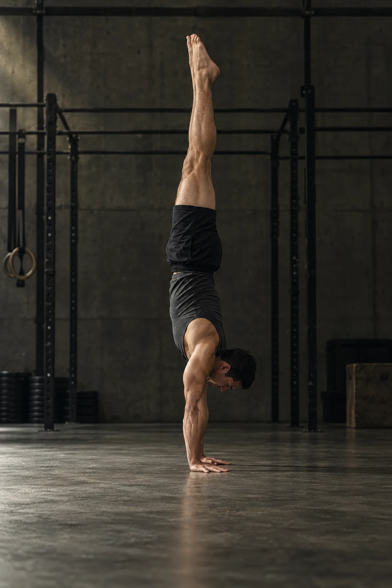

FRONT LEVER · בקרוב
כל תנועה מתחילה בהחלטה.
כל תנועה.
כל תנועה.
יותר מדויקת.
לראות את הטכניקה שלך.
להבין מה לשפר. להתקדם בביטחון.

ניתוח תנועה
שמוביל אותך
לרמה הבאה.
הטכניקה שלך, מזווית חדשה.
וידאו אחד. תובנות שאפשר ליישם.
העלאת סרטון
01
HANDSTAND / עמידת ידיים
זווית טובה.
זווית טובה.
תמונה ברורה של הטכניקה.

מהצד.
כל הגוף.
כל התנועה.צילום לדוגמה · AI
כל הגוף.
כל התנועה.צילום לדוגמה · AI
צילום מהצדבגובה הגוף
כל הגוף בפרייםמכפות הידיים עד הרגליים
תאורה ברורהללא אור חזק מאחור
טלפון יציבמרחק של כ־2–3 מטרים
הווידאו שלך נשאר במכשיר שלך.
התנועה שלך. בפוקוס.
הדגמת עיצוב · תמונת AI · לא ניתוח משתמש
דוגמת נגן00:04 / 00:10
הנקודות שעושות את ההבדלנתוני דוגמה
הגוף בקו. מכאן מדייקים.
שמרו את הצלעות אסופות לאורך כל ההחזקה כדי לצמצם את הקשת בגב.
דוגמת משוב בלבד · לא תוצאת משתמש